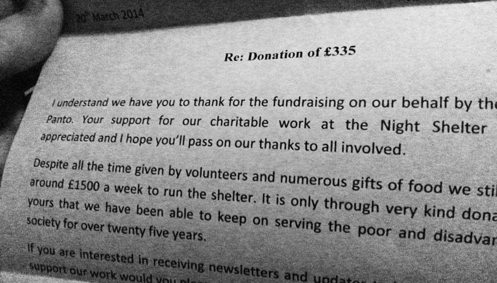

Panto 2013: Donation to the Julian Trust Homeless Shelter
The last two years that we have put on Bristol's finest pantomime we've also had a little fundraiser to get some cash to buy some props and fund my increasingly expensive drug habit (J0KES LULZ).
This year Christophe, Lukas, and Pardon My French all graced the decks completely for free (so big up all themselves) at the Big Chill back in December. It was a top night, and thanks to all who came down.
We once again raised more money than we spent on the Panto (which you proabably worked out if you saw it), and have finally got our shiz together and donated it to the Julian Trust homeless shelter in Portland Square, Bristol.
We gave them £335, which isn't too shabby considering this is a seperate pot to the money raised on the actual day of the panto. So, once again massive thanks to everyone who put in the long hours that and hard work that our (my) lackadaisical preparation schedule necessitates.
Please like our Facebook page to hear about more exciting things like this blog post :/
NB yeah okay we only raised enough money for them to run for a fifth of a week, but that is better than nothing.
NB#2 I didn't ask them to just thank me in the letter. I honestly didn't.